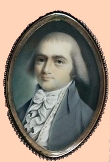

Peter E. Elmendorf
Peter Edmund Elmendorf was born in September 1764. He was last child born to the marriage of Peter Edmund Elmendorph and Mary Crooks Elmendorf of Kingston. New Netherland pioneers, the Elmendorf family had been living in Kingston since its earliest days. His same-named father, a prominent businessman, died less than a year after Peter's birth and he would be raised by his widowed mother and older siblings.
In 1768, his sister relocated to Albany following her marriage to prominent businessman Rutger Bleecker. Catherine's youngest brother seems have joined her for, in September 1787, Peter Elmendorf was identified as the co-executor of the estate of his brother-in-law. Bleecker's early death brought Peter even closer to his widowed sister. 
Prior to coming to Albany, he was sent to Princeton University - perhaps as early as 1780. Peter Elmendorf graduated from Princeton in 1782. During that time, he maintained a telling correspondence (perhaps in addition to his collegiate diary) on a number of topics with his mother.
This individual is said to have married twice - both times to women named Elizabeth Van Rensselaer who were his Pearl Street neighbors. In March 1793, he married Elisabeth Van Rensselaer in Albany [no marriage record at the church]. That marriage is said to have produced two daughters who would be christened in the Albany Dutch church in 1793 and 1796. Then, in September 1802, he married [a different] Elizabeth Van Rensselaer at the Albany Dutch church where their children would be baptized. In 1805, he was identified as a member of the church Consistory. In 1815, Peter and Elizabeth joined the Second Dutch church.
Although admitted to practice law, except for being identified as a Surrogate in 1807, he does not seem to have held official positions in the Albany city government. At that time, he was named as co-executor of the estate of Jeremiah Van Rensselaer. However, he was involved in a number of progressive initiatives. In 1794, he pledged £40 toward the establishment of Union College. In 1797, he would be counted among the advocates for the chartering of a library in Albany.
These Elmendorfs raised their family at what would be known as 66 North Pearl Street. In 1800, the second ward census began to document his growing household that included three slaves. A year earlier, his house, lot, and personal property on along the west side of Pearl Street were assessed moderately. A later chronicler recalled his property at that location.
In 1808, he was among those worthies invited to the funeral of Henry J. Bleecker.
Peter Edmund Elmendorf died in May 1835. He had lived seventy years. Later that month, letters of administration were granted on his estate. His remains found their way to Albany Rural Cemetery.
Text of entry transformed from an online copy of PFS which reads: "Elmendorff, Peter Edmund, and Eliza Van Rensselaer. He was an eminent lawyer and lived on the west side or Pearl street, third house north or the Female Academy, which his wife inherited from her mother, Maria Sanders, dau. of Robert Sanders and w of Philip Van Rensselaer. This lot descended to her dau. Maria, w. of Peter Sanders. Peter K. Elmendorf d. May 15, 1835, a. 70 y.; she d. April 20, 1836 age 58."
Portrait: Detail transformed from a miniature by John Ramage. Ramage also executed a portrait of Elmendorf's father-in-law, Philip Van Rensselaer. Both are in the Collection of the Albany Institute of History and Art.
Albany Fifty years ago: Peter E. Elmendorf lived in the house No. 12, attributed to Nicholas Bleecker, and in the next house resided Gerardus Lansing, brother-in-law of Gen. Ten Broeck, and formerly an Indian interpreter. A house has been omitted which stood next to No. 13, built and occupied by John Rutger Bleecker, a surveyor. These discrepancies are not much to be wondered at, when we consider what disputes sometimes arise where property is accurately described. No. 12 was the last of the old houses in that row, and was taken down but a few years ago. The site is now occupied by the free stone front dwelling of William S. Learned, Esq. This lot is said to have belonged originally to Maria Sanders, daughter of Robert Sanders and wife of Philip Van Rensselaer. It descended to her daughter Betsey, the first wife of Peter E. Elmendorf. From Mrs. Elmendorf it descended to her daughter Maria, wife of Peter Sanders, still living; and was conveyed by her to William White, and by him to the present owner. In this house Burgoyne was entertained at a large dinner party while he was in Albany, by Mr. Philip Van Rensselaer. Peter E. Elmendorf afterwards lived in a house nearly opposite to this lot, where stands the house built by Mr. Thomas W. Olcott, at present owned by Azariah E. Stimson. Used as a footnote to the above and printed in MC II, p.23. Online; also in Full Text format.